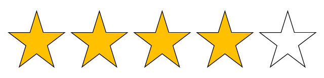
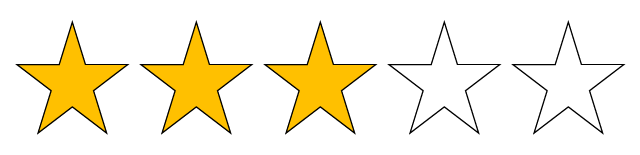
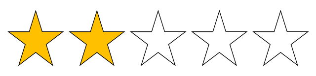

Coucou !
Etudes
2021-2024 : Chef de projet numérique (Normandie Web School)
2017-2020 : Lycée (Institution Jean-Paul II)
Expérience professionnelle
Mai-Juin 2021: stage pratique de conception graphique à N’Connect
Novembre 2018 : stage d’observation de développement front-end et back-end à BearStudio
Janvier 2017 : stage d’observation à Aximum Produits de Marquage
Compétences
HTML 
CSS 
Adobe Indesign
Adobe Illustrator
Adobe XD
Adobe Photoshop
WordPress
GitHub
Anglais
Espagnol 
Projets d'école
Faire sa marque personnelle
CV
logo
charte graphique
site internet
carte de visite
compte LinkedIn
Créer une association
charte graphique
logo
statuts
maquette du site et site internet
imprimables
réseaux sociaux
Diplomes
Bac Scientifique
ASSR 1
Brevet de secourisme
Engagements particuliers
J’ai fait partie du mouvement Scout depuis mes 6 ans jusqu’à mes 19 ans ;
j’ai été accompagnateur dans la branche Vent du Large, qui s’occupe des jeunes adultes handicapés.
J’ai aussi participé à plusieurs collectes de la Banque Alimentaire.
Centres d'intérets
Rétrogaming (consoles)
Dessin
Uchronies
Histoire
Maquettisme
Japanimation
Mangas